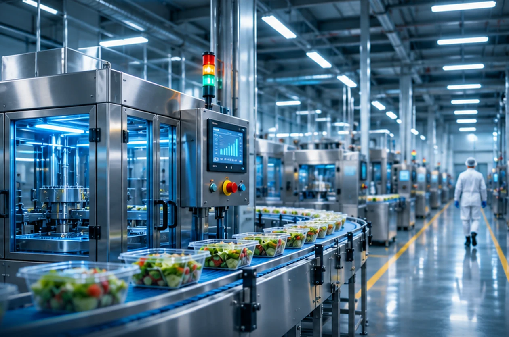
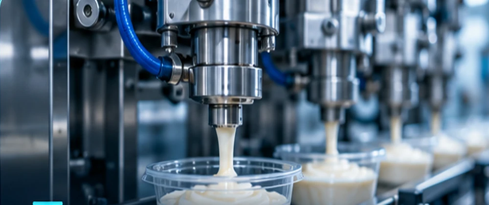
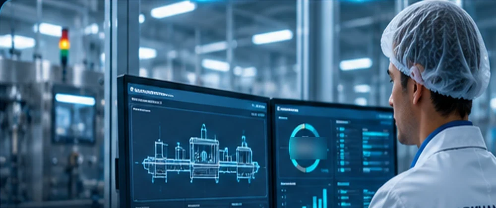

Ручной труд
Нехватка людей и зависимость производства от ручных операций.
Подбираем пищевое оборудование у китайских производителей под ваш продукт, объёмы и задачу производства.
Начинаем не с каталога, а с того, что ограничивает ваше производство сегодня.
Нехватка людей и зависимость производства от ручных операций.
Существующие мощности перестают справляться с растущим спросом.
Нужен более эффективный технологический сценарий.
Важно сохранить качество продукта и разобраться в сервисе и запчастях.
Производственные линии, фасовка и подготовка сырья — процессы, под которые мы подбираем решения. Фотографии иллюстрируют отрасль, а не проекты компании.



Конкретную модель, комплектацию и доступность уточняем после обсуждения задачи с производителем.
Чтобы сравнивать предложения, важно отделить цену производителя от услуг подбора, логистики и обязательных платежей.
Ориентир вознаграждения DARKHANTECH при предварительной модели 5–10%. В брифе эта модель обозначена как рабочая и требует согласования.
Работа начинается с характеристик продукта и параметров вашей задачи.
Продукт, производительность, бюджет, сроки и условия размещения.
Запрашиваем подходящие модели, каталоги, технические параметры и видео.
Обсуждаем доступные варианты и формируем коммерческое предложение.
Методика: (операторы до − операторы после) × полная стоимость сотрудника − новые ежемесячные расходы. Не учитываются изменение выпуска, качество, брак, энергозатраты, простои, налоги, инфляция и стоимость финансирования. Параметры в форме — вымышленный пример, а не данные клиентов.
Для сравнения оборудования нужны не только фото и цена: качество продукта, производительность, габариты, электропитание, комплектация и условия эксплуатации.
При подборе учитываем стоимость оборудования на заводе, характеристики, комплектацию и отдельные расходы на логистику и оформление. Условия зависят от проекта.
Демонстрационная форма макета. Контакты и отправку заявки подключим после согласования.